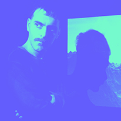

GABRIEL RUD
GABRIEL RUD
Orbitante
VIDEO INSTALACIÓN. VIDEO HD, SIN SONIDO, EN LOOP.

En esta pieza vemos un cuerpo, escultura digital, modelada por Rud en una intensa búsqueda morfológica. Su movimiento de rotación en infinito, muestra de a poco las distintas caras de este cuerpo, enmarcado en el mismo misterio de su forma, de los accesos que se abren a un interior inalcanzable y la extrañeza que dificulta el reconocimiento de su superficie. El nombre de la pieza sugiere que además de la rotación existe una trayectoria, que modifica tanto su relación con el espacio como con su observador en un doble juego entre la posibilidad de su existencia física y su proceso plástico per se.

Gabriel Rud (Argentina, 1979) es especialista en Lógica y Técnica de la Forma y Diseñador de Imagen y Sonido de la Universidad de Buenos Aires, donde se desempeña como Profesor Adjunto de la materia Diseño Audiovisual, Cátedra Campos Trilnick, y como Investigador del proyectoidis.org (Investigaciones en Diseño de Imagen y Sonido). Ganador del 1º premio del Salón Nacional, categoría nuevos soportes e instalaciones. Sus trabajos han sido exhibidos en galerías, salones, museos y festivales internacionales.
www.gabrielrud.com